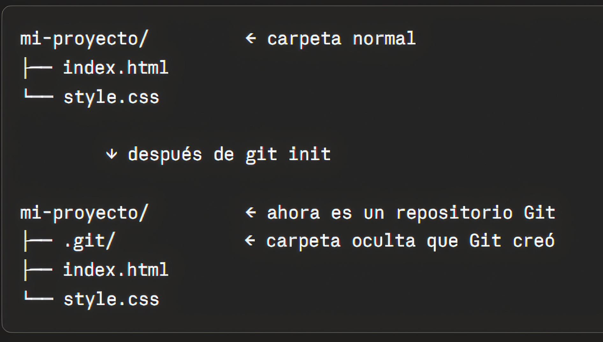
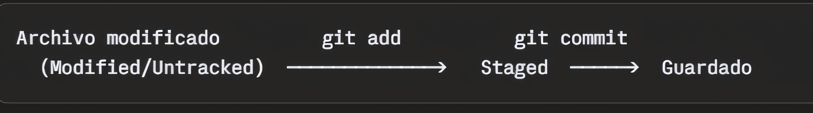
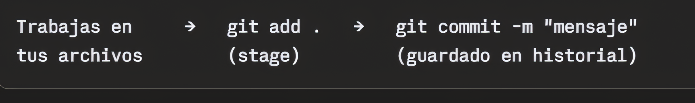
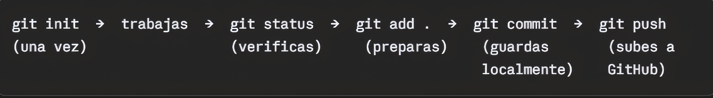
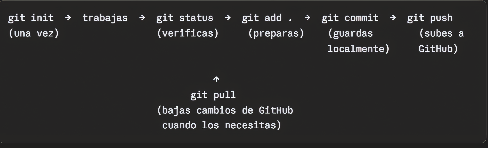

¿Por qué existe git init?
Porque no todas las carpetas de tu computadora necesitan ser rastreadas por Git. Solo las que tú decides convertir en un repositorio. git init es ese momento de decisión.

Estos 6 comandos son el flujo de trabajo diario de cualquier desarrollador.
Antes de entender que es git init necesitamos entender que es un repositorio.
Un repostiorio (o "repo") es simplemente una carpeta de tu computadora que Git está Vigilando y rastreando. Git observa cada cambio que haces dentro de ella - qué archivos creaste, modificaste o eliminaste, y cuándo.
Piensalo así: es como una carpeta normal, pero con una memoria fotográfica de todo lo que ha pasado dentro de ella desde el principio.
Cuando escribes git init dentro de una carpeta, le estas diciendo a
Git:
"Empieza a vigilar esta carpeta desde ahora."
Git crea una carpeta oculta llamada .git dentro de tu proyecto. Esa carpeta es donde Git guarda todo el historial, los registros y la configuración del repositorio. Tú nunca la tocas directamente, Git la maneja solo.
Porque no todas las carpetas de tu computadora necesitan ser rastreadas por Git. Solo las que tú decides convertir en un repositorio. git init es ese momento de decisión.

git status es como preguntarle a Git:
"¿Qué esta pasando en este momento dentro del repositorio."
Git te responde mostrándote el estado actual de tus archivos. Es una foto del momento - qué cambió. qué está listo para guardarse y qué Git aún no conoce.
Este es el concepto más importante de Git, todo gira alrededor de esto:
Imagina que estás empacando una maleta para viajar:
git status te muestra en qué parte del cuarto está cada prenda.
Porque antes de guardar cualquier cambio siempre debes ejecutar git status para saber exactamente qué está pasando. Es el comando que más usarás en tu día a día, incluso más que git commit.
git add es el comando que le dice a Git:
"Quiero que prepares estos cambios para guardarlos."
Toma tus archivos del estado Untracked o Modified y los mueve al estado Staged. Es decir, los mete a la maleta listos para el commit.
Esta es la pregunta clave. ¿Por qué no guardar directamente sin pasar por el stage?
Imagina que trabajaste todo el día y modificaste 5 archivos, pero solo 3 de ellos están realmente listos y los otros 2 aún estan incompletos. git add te permite elegir exactamente qué entra en el próximo guardado y qué no, dándote control total sobre tu historial.
git add index.html
Solo prepara ese archivo en particular.
git add index.html style.css
Prepara exactamente los archivos que mencionas.
git add .
El punto significa "todo lo que cambio en esta carpeta". Es el más usado en el día a día.

Cada paso tiene su propósito: primero trabajas, luego seleccionas con git add, luego guardas con git commit
git commit es el comando que guarda oficialmente los cambios
en el historial de Git. Es el momento en que le dice a Git:
"Toma todo lo que está en el stage y guárdalo para siempre en el
historial."
Si git add fue meter la ropa a la maleta, git commit es cerrar y etiquetar la maleta con una descripción de lo que hay dentro.
Un commit es un punto de guardado en el tiempo. Cada commit contiene:
Piénsalo como una fotográfica del proyecto en ese momento exacto. Puedes tener miles de fotos y regresar a cuálquiera de ellas cuando quieras.
El mensaje del commit es lo que hace que el historial sea legible y útil. Cuando revises tu historial en el futuro, o cuando trabajes en equipo, ese mensaje explica qué cambiaste y por qué.
Un buen mensaje es claro y específico:
"agrega formulario de contacto"
"Corrige error en el menú de navegación"
"Actualiza colores del header"
Siempre tiene que ser un mensaje claro de lo que se hizo, ya que un mal mensaje no ayuda a entender que se modifico.
La forma estándar, la que usaras siempre:
git commit -m "Tu mensaje aquí"
La bandera -m significa message. Todo lo que escribas entre comillas es el mensaje que quedará grabado en el historial.

git push es el comando que sube tus commits desde tu computadora a
GitHub. Es el momento en que le dice a Git:
"Todo lo que guardé localmente, envíalo ahora a GitHub."
Si hasta ahora todo el trabajo vivía solo en tu computadora. git push es el puente que lo lleva a internet.
Porque Git tiene dos mundos distintos:
Trabajas localmente a tu ritmo, haces todos los commits que necesitas, y cuando estás listo subes todo de una sola vez con git push.
La primera vez que subes un proyecto:
git push -u origin main
Desde la segunda vez en adelante simplemente:
git push

Puedes guardar mil veces localmente, pero nadie más lo ve hasta que lo envías.
git pull es el comando opuesto a git push. En lugar de subir tus
cambios a GitHub,los baja desde GitHub a tu computadora.Es el momento
en que le dice a Git:
"Trae todos los cambios que están en GitHub y actualiza mi proyecto
local."
Hay tres situaciones típicas donde necesitas git pull
git pull
Así de simple. No necesita parámetros adicionales porque ya configuraste la conexión con -u cuando hiciste el primer git push.
git pull en realidad hace dos cosas en una sola:
git pull = git fetch + git merge
NO necesitas ejecutarlo por separado, git pull los hace juntos automáticamente. Lo mencionamos solo para entender qué ocurre por dentro.

Siempre ejecuta git pull antes de empezar a trabajar, especialmente si trabajas en equipo. Así te aseguras de tener siempre la versión más actualizada del proyecto y evitas conflictos.